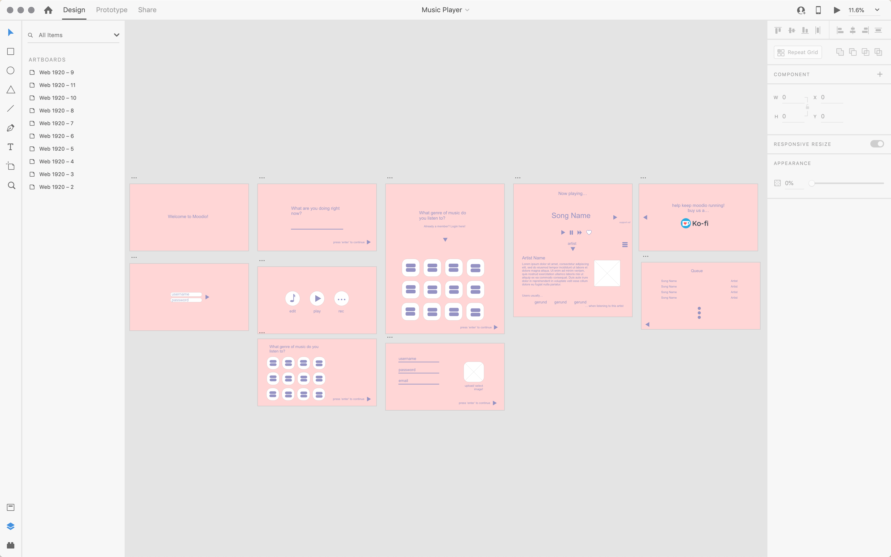

moosic was the first project I created in ARTG 2400: Interaction Design I.
The above image shows the first draft of my project.
After many suggestions from the professor, I decided to take the knowledge I proceeded to learn later in the year and incorporating it into revising the prototype.